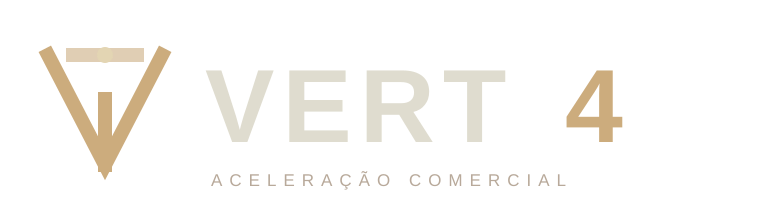

Amor
Paixão pelo trabalho e cuidado genuíno com clientes e parceiros.

VERT4® | Arquitetura comercial
A VERT4® estrutura aquisição, processo, gestão e inteligência comercial para empresas que decidiram construir vendas com método e continuidade.
Sistema VERT4®
02 | Missão
Converto presença e relacionamento em oportunidades comerciais, com propósito, método, processo e cultura. Uma estrutura capaz de gerar caixa com previsibilidade e continuidade, mesmo quando a equipe muda.
03 | Visão
Ser reconhecida como a maior empresa do Brasil em conversão de relacionamentos em oportunidades comerciais e uma referência global em estruturação comercial.
04 | Princípios
A venda certa fortalece o sistema. A venda forçada cobra o preço depois.
O maior ativo comercial deve pertencer à empresa. A estrutura preserva conhecimento e continuidade quando as pessoas mudam.
Compreender a causa vem antes de recomendar a solução.
Confiança nasce de um padrão claro, acompanhado e capaz de se repetir.
Construímos estruturas que permanecem relevantes além do resultado de um trimestre.
Empresas fortes formam pessoas, distribuem conhecimento e preservam sua capacidade comercial.
05 | Cultura em prática
Paixão pelo trabalho e cuidado genuíno com clientes e parceiros.
Integridade e transparência em todas as ações, sem exceção.
Verdade e coerência entre o que se diz e o que se faz.
Desenvolvimento e bem-estar de todos os envolvidos.
Assumir escolhas, compromissos e responsabilidade pelos resultados.
Reconhecer a necessidade de aprendizado contínuo.
A repetição consciente sustenta a qualidade e fortalece o método.
Acreditamos no trabalho como fonte de valor, dignidade e impacto real.
06 | Arquiteturas de atuação
Arquitetura do sistema comercial, da aquisição à gestão da continuidade.
Relacionamento estruturado para gerar, conduzir e acompanhar oportunidades comerciais.
Direção estratégica para líderes que estão estruturando sua capacidade de vendas.
07 | Assinatura